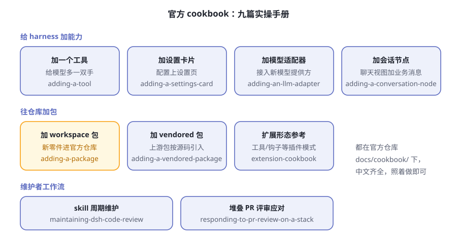
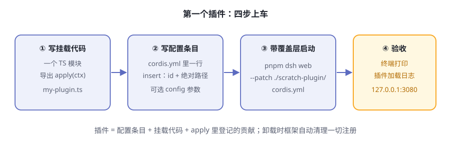
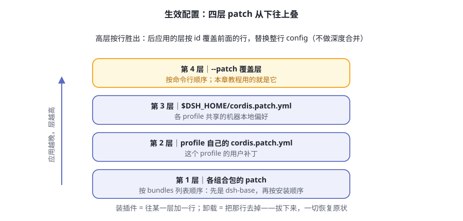

第11章 你的第一个插件¶
第 4 章说过，dsh 是一盒乐高：别人卖车，它给你造车车间。前十章你一直在拆别人的零件，这一章轮到你自己造一个。
目标放得很低：给 agent 加一个 greet 工具——你报一个名字，它回一句问候。就这么点出息？对。零件的价值不在大小，在于从头到尾走一遍"造出来、挂上去、验明白、发出去"的全流程。走完这一遍，社区里任何插件在你眼里都不再是黑盒。
阅读提示 本章是一个完整 walkthrough：从 0 写一个最小插件，挂载、加工具、加配置、打包发布，全程跟着官方教程走。最小插件只有几行；就算你不亲手写，读完也能看懂插件生态在干什么。
插件的最小形态¶
在 dsh 里，插件就是一个导出 apply 函数的 TypeScript 模块。框架加载它时调用 apply，递进来一个 ctx——第 4 章那个共享总部。你通过 ctx 登记一切贡献。
import type { Context } from '@deepseek-ai/cordis'
export const name = 'hello-plugin'
export function apply(ctx: Context) {
console.log('[hello-plugin] plugin loaded!')
}
官方教程的原话：这就是完整形态。三句话翻译：
apply是"入职手续"——插件被挂载时，框架调用它；声明过的依赖会在它运行前就绪ctx是共享总部——你在里面登记工具、监听事件、获取服务- 函数体干的事，就是这个插件的全部贡献
除了函数，插件还有对象和类两种形态（表11-1），新手只需要认识第一种：
表11-1 插件的三种形态
| 形态 | 长什么样 | 什么时候用 |
|---|---|---|
| 函数 | 导出 apply 函数 |
绝大多数场景，起步就用它 |
| 对象 | 默认导出带 apply 方法的对象 |
需要挂点元数据时 |
| 类 | 继承 Service 的类 |
要对外提供正式服务、给别的插件用时 |
出发前先看地图：插件能干什么¶
动手之前，先看一眼官方的九篇实操手册（图11-1），全在仓库 docs/cookbook/，中文齐全——插件的能力版图一目了然：

图11-1 官方 cookbook 全景
给模型加能力、给界面加配置、给仓库加包、给维护者定流程，各占一类。本章走最直观的一条路：加一个工具——给模型多一双手。其余的菜谱，走完这一章你就都能读懂了。
想吃透底层框架，还有 Cordis 教程七课：在临时目录里动手搭一个迷你运行时，不需要 API 密钥。官方自己指路：为 harness 本身写插件，走本章这条教程；想懂原理的人，去读 Cordis 教程。
Walkthrough 第一步：写一个 hello 插件¶
官方教程的起点是一个已完成从源码运行准备的仓库检出（git clone → pnpm install → pnpm run build）。以下步骤与官方《第一个插件》一致，命令可直接复制。
先建项目骨架：
mkdir -p scratch-plugin/src
再写挂载代码 scratch-plugin/src/my-plugin.ts：
import type { Context } from '@deepseek-ai/cordis'
export const name = 'hello-plugin'
export function apply(ctx: Context) {
console.log('[hello-plugin] plugin loaded!')
}
然后在仓库根目录运行 pwd 拿到绝对路径，写配置条目 scratch-plugin/cordis.yml（把路径换成你的）：
- insert:
- id: hello
name: '/absolute/path/to/deepseek-harness/scratch-plugin/src/my-plugin.ts'
两个细节官方专门叮嘱过：插件路径必须是绝对路径；这份文件只是一个覆盖层，它只贡献配置，不改变加载器解析模块时用的 profile 目录。
最后带覆盖层启动：
pnpm dsh web --patch ./scratch-plugin/cordis.yml
打开 http://127.0.0.1:3080。启动期间，终端会打印 [hello-plugin] plugin loaded!——你的插件上车了。四步全景见图11-2。

图11-2 第一个插件的四步
插件三件套¶
回头看，一个能跑的插件恰好由三样东西组成（表11-2）。这个拆解是理解整个插件生态的钥匙：
表11-2 插件三件套
| 件 | 是什么 | 没了它会怎样 |
|---|---|---|
| 配置条目 | cordis.yml 里的 insert 行：id、模块名（路径或包名）、可选 config |
框架不知道有这号插件 |
| 挂载代码 | 导出 apply 的模块（可带 name、inject、Config） |
有条目也加载不出东西 |
| 注册副作用 | apply 里通过 ctx 登记的工具、监听器、定时器 |
插件加载了，但没贡献任何能力 |
第三件套有个重要的售后条款：通过 ctx 注册的一切，在插件卸载时都会被自动清理——不用你手动移除监听器或清定时器。如果有需要亲手打理的资源（比如一条网络连接），用 ctx.effect() 告诉框架怎么收尾：
export function apply(ctx: Context) {
ctx.effect(() => {
const timer = setInterval(() => console.log('heartbeat'), 5000)
// 返回的函数在插件卸载时运行
return () => clearInterval(timer)
})
}
挂载时干活，卸载时还原——第 4 章承诺的可逆性，落实的就是这一条。
Walkthrough 第二步：给模型造一只手¶
hello 插件只打了声招呼，现在干正事：把 greet 工具登记给模型。这一步对应官方《开发一个工具》，把 my-plugin.ts 整个替换为：
import type { Context } from '@deepseek-ai/cordis'
import { defineTool } from '@deepseek-ai/dsh-tools'
export const name = 'greet-tool'
export const inject = ['tools']
export function apply(ctx: Context) {
ctx.tools.register(defineTool({
name: 'greet',
description: 'Greet someone by name.',
parameters: {
name: { type: 'string', required: true, description: 'The name to greet' },
},
output: {
schema: { type: 'string' },
render: (_args, value) => [{ type: 'text', text: value }],
},
async execute(args) {
return `Hello, ${args.name}!`
},
}))
}
逐段看这段代码在"登记"什么：
inject = ['tools']——声明依赖。框架等工具注册表就绪后才调用你的applyparameters——给模型看的参数 schema：名字、类型、必填与否、描述。模型靠它知道"这个工具要喂什么"output.schema——结果长什么样的声明，execute必须返回符合它的值output.render——把结果翻译成模型看得见的文本execute——真正干活的几行
一句话：给模型加工具，必须把 schema 登记齐全。模型不认识你的代码，它只认识登记上去的名字、描述和参数表——这正是第 6 章流水线的入口形状。登记清单见表11-3：
表11-3 一个工具的登记清单
| 登记项 | 谁在读它 |
|---|---|
name、description |
模型靠它们决定要不要调用 |
parameters |
模型照此填参数，框架照此校验 |
output.schema |
声明结果形状，execute 必须照此返回 |
output.render |
把结果翻译成模型看得见的文本 |
execute |
真正干活的代码，模型看不见它 |
如果开发命令已停，重新启动：
pnpm dsh web --patch ./scratch-plugin/cordis.yml
打开 http://127.0.0.1:3080，输入：Use the greet tool to greet Ada. 模型调用 greet，收到工具结果 Hello, Ada!。你造的手，模型真的用了。
Walkthrough 第三步：让参数可配置¶
把问候语写死在代码里，别人想换个说法就得改代码。官方《插件配置》的做法是：导出一个 Config 类型和同名的 schema，默认值直接写在 schema 里：
import type { Context } from '@deepseek-ai/cordis'
import Schema from '@deepseek-ai/schemastery'
export interface Config {
greeting: string
maxRetries: number
}
export const Config: Schema<Config> = Schema.object({
greeting: Schema.string().default('Hello'),
maxRetries: Schema.number().default(3),
})
export function apply(ctx: Context, config: Config) {
console.log(config.greeting) // 用户传的值，或 schema 里的默认值
}
用户侧只需在配置条目里多写几行：
- insert:
- id: hello
name: '/absolute/path/to/deepseek-harness/scratch-plugin/src/my-plugin.ts'
config:
greeting: 'Hi there'
maxRetries: 5
插件加载时，框架用你导出的 schema 校验配置、补齐没给的默认值；配置在运行期变更时还有热替换兜底（表11-4）。
表11-4 配置变更时发生什么
| 事件 | 框架动作 |
|---|---|
| 插件加载 | 用导出的 schema 校验配置；不合法就加载失败、明确报错 |
| 某字段没给值 | 填上 schema 里写的默认值 |
cordis.yml 里的 config 被修改 |
热替换插件：卸载旧实例、加载新实例，旧注册随之清空 |
两条官方设计原则值得背下来：
- 无硬编码可调参数——凡是不同部署可能取不同值的参数，都必须定义为配置字段。检验标准一句话：能不能只改
cordis.yml就换值，不碰代码？ - 配置错误要响亮——无效配置在加载时直接失败、给出明确错误，绝不带病上岗。
交付给别人：打包与安装¶
前三步靠 --patch 覆盖层加载本地文件，这是开发模式。要交付给别人，得把插件变成可安装的组合包（bundle）。这一节对应官方《打包与安装插件》。
先分清两个概念，它们回答不同的问题（表11-5）：
表11-5 bundle 与 profile
| 概念 | 回答的问题 | 在哪里 |
|---|---|---|
| 组合包（bundle） | "这个包贡献什么？"——一份插入插件行的 patch | npm 包，你编写并分发 |
| profile | "这套配置由哪些组合包按什么顺序组成？" | $DSH_HOME/profiles/<名字>/，用户用 dsh --profile 启动 |
没有东西同时是两者。组合包就是三样东西：package.json（声明 dsh.bundle 清单）、cordis.patch.yml（层内容）、插件模块本体。目录长这样：
hello-plugin/
├── package.json # 声明 dsh.bundle
├── cordis.patch.yml # 被 profile 列出时应用的层
└── index.js # 插件模块
cordis.patch.yml 和你一直在写的覆盖层是同一种东西，唯一区别：插件行按包名引用（这样模块解析才能找到已安装的代码），而不是源码路径：
- insert:
- id: hello
name: dsh-hello-plugin
安装进一个 profile（dsh plugin 会把参数转发给 pnpm，所以 pnpm 子命令都能用）：
dsh plugin --profile demo add ./hello-plugin
dsh --profile demo --dump-config # 能看到 "# == dsh-hello-plugin" 层
dsh --profile demo
首次使用会自动初始化 profile，@deepseek-ai/dsh-base 成为它的第一个组合包。卸载也是一行：dsh plugin --profile demo remove dsh-hello-plugin 同时移除依赖和对应的层——第 4 章的可逆性又一次兑现。
四层配置，谁压谁¶
生效配置在空根之上按固定顺序逐层叠加（图11-3）：

图11-3 生效配置的四层组合
两条裁决规则：后应用的层按行胜出；替换是整行替换——patch 会替换目标行整个 config，而不是深度合并各键。由此推出两条给插件作者的忠告：你的层可以按 id 覆盖前面的行，但必须重述该行需要的每一个键；用户也能在自己的层里覆盖你的行而不用改你的包，所以把大概率会被保留的值写成默认，其余交给 schema。
从 GitHub 直接装：一道绕不开的坎¶
用户也可以不经过注册表，直接从 git 托管安装：
dsh plugin --profile demo add github:you/hello-plugin
但 git 安装拉取的是源码，不是构建产物：没有任何环节替你跑 build，TypeScript 包到手没有编译输出，加载会失败。作者必须提供一个自包含的 prepare 脚本（pnpm 在 git 安装后运行它来构建），用户则要为构建显式授权——pnpm ≥10 在得到允许前拒绝运行 git 依赖的构建脚本。
请如实看待这项授权：允许该包的代码在安装时于你的机器上执行，且不在 agent 运行的任何沙箱之内。官方建议：只对源码可信的包授权，并锁定 commit，让后续推送无法悄悄改变实际运行的内容。
不想让用户做授权？那就分发构建产物，两条路都不需要任何构建权限：发布到 npm（发布时带好构建好的输出），或用 pnpm pack 打成 tarball 交付。
让插件被找到¶
官方 README 给的生态约定一句话：为你的插件仓库加上 dsh-plugin 话题，便于被发现。没有中心化应用商店——发现靠话题和口碑，这是开源生态的老配方。
最简样机：两行配方的自指 agent¶
最后看一眼官方示例里最简单的一台样机：web-cordis。它的全部配置就是一份覆盖层，核心只有两处（表11-6）：
表11-6 web-cordis 的全部配置
| 配置 | 作用 |
|---|---|
改一行 webserver 的端口 |
把 web 服务从默认 3080 挪开，避免撞车 |
insert 两行插件 |
装上宿主运行器和 Cordis 工具组 |
就这两行，装配出一台自指 agent：它能检查当前进程里的插件树，挂载或卸载由模型当场编写的插件；临时插件在卸载或进程退出时消失，并可能影响同一进程中的其他会话。
这台样机也带着官方的一句忠告：临时插件能触及进程里所有注入的能力，要把这种部署当作 shell 权限来对待，而不是安全边界。第 9 章的主题在这里再次浮现：能力越强，部署时的边界越要自己画。
🧪 本章实验¶
实验 11-1 ★★｜跑通 hello 插件 目标：亲眼看到自己的插件被挂载。 步骤：克隆官方仓库，完成从源码运行的准备，按本章"第一步"做一遍
scratch-plugin，用pnpm dsh web --patch ./scratch-plugin/cordis.yml启动。 验收：终端打印[hello-plugin] plugin loaded!，http://127.0.0.1:3080正常打开。实验 11-2 ★｜故意让它失败 目标：验证"配置错误要响亮"。 步骤：给带
Config的插件传一个不合法的值（比如把maxRetries写成字符串），重新启动。 验收：插件加载失败并给出明确错误信息，而不是带着错误配置悄悄运行。实验 11-3 ★★｜打包、安装、卸载 目标：走通交付闭环。 步骤：按"打包与安装"一节做出
hello-plugin组合包，dsh plugin --profile demo add ./hello-plugin，先--dump-config再启动；最后remove，再启动一次。 验收：安装后能看到专属层和加载日志；卸载后两者都消失，一切恢复原状。
🤔 思考题¶
- ★ 生效配置用"后应用的层按行胜出、整行替换"，而不是深度合并。对插件作者和最终用户，这分别意味着什么？
- ★ 从 GitHub 装插件，需要用户为构建脚本显式授权。为什么官方不把这一步自动化掉？
- ★★ 如果为自己的工作写第一个插件，你会选"加一个工具"还是"加一张设置卡片"？说说判断依据。
- ★★ web-cordis 让模型能挂载自己写的插件，官方提醒"当作 shell 权限对待"。插件的能力边界应该由框架管，还是由部署管？
📝 小结¶
- 最小插件 = 一个
apply函数——拿到ctx就能登记贡献；函数起步，类留给正式服务 - 三件套——配置条目（
cordis.yml的insert行）、挂载代码（导出apply的模块）、注册副作用（走ctx，卸载自动清理） - 给模型加工具必须登记 schema——参数表、结果声明、渲染方式一样不能少，模型只认登记过的东西
- 配置走 schema——默认值写在 schema 里，加载时校验补齐，改配置还能热替换
- 交付 = 组合包——
dsh.bundle清单 + patch + 模块；dsh plugin add装进 profile，remove即回滚；生效配置四层叠加、按行胜出 - 生态靠话题发现——仓库打上
dsh-plugin话题；九篇官方菜谱中文齐全，最简样机 web-cordis 只有两行 insert
下一章，把零件组装成一辆你自己的车。➡️ 第12章 组装自己的 agent